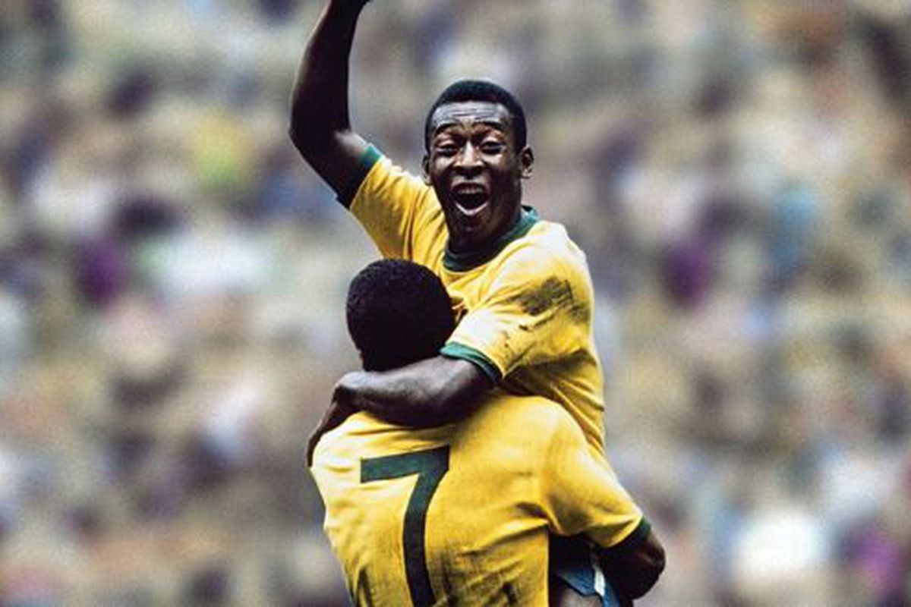

My Top 4 players of all time
Pele
Messi
Ronaldo
Benzema
This is Pele who won the Ballon D'or 7 times

Start from Top
This is Messi who also won the Ballon D'or 7 times
Start from Top
This is Ronaldo who has won the Ballon D'or 5 times
Start from Top
This is Benzema who won the Ballon D'or 1 time
Start from Top